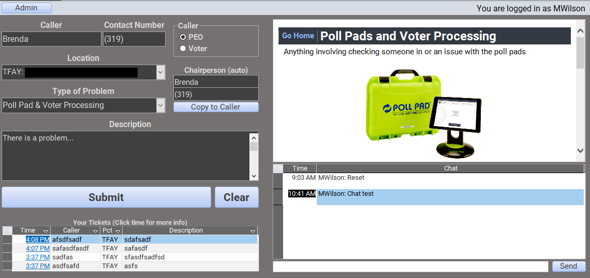
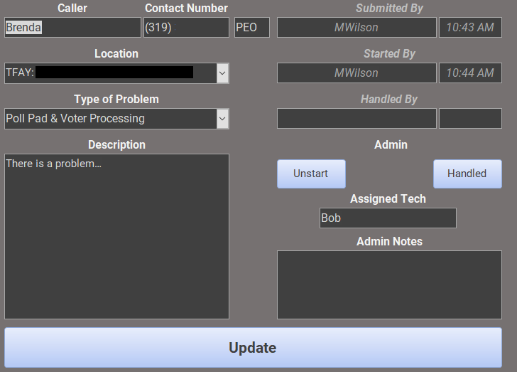
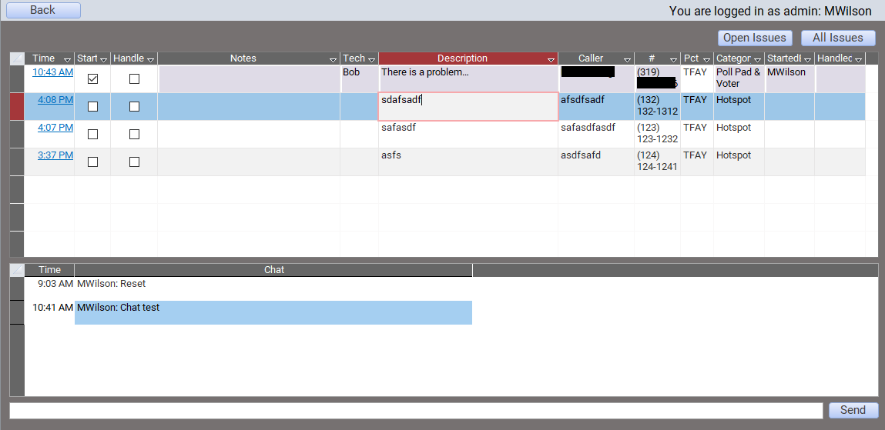
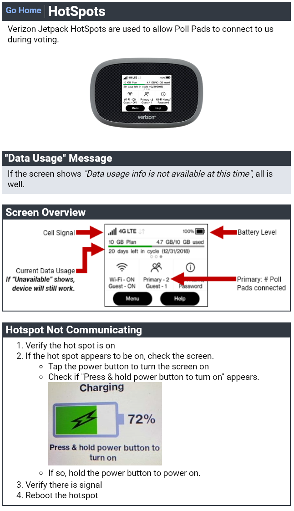
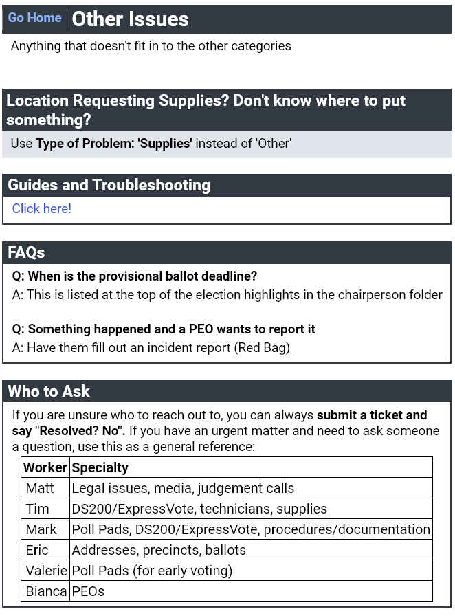

<<< Go Back
Software Solution:
Election Day Problem Log
Situation
Incoming calls from our polling location workers on election day weren’t managed well. We used a Google form and Google sheets, which made it hard to determine which issues were addressed, ongoing, or resolved. We also had no idea who was taking which issues. Also, reviewing issues after election day wasn't a thing. Targeting problem areas to address for future elections was difficult.
Task
I had a lot of experience with Microsoft Access at this point, so I took it upon myself to make a database for our phone team to use as a ticketing system.
Since I was the go-to for many technical election day questions, I also used this as an opportunity to alleviate questions and escalated calls. My goal was to make my day (6 AM - 10/11 PM) less stressful.
Action
I recreated the form in Access, then created several new features to address issues:
- An admin portal where you could claim unresolved tickets, where it automatically showed that you were working on it. Tickets were color-coded to show whether they were resolved, in-progress, or active.
- Common troubleshooting steps and FAQs related to the category selected when creating a ticket
- Integrated chat, so you could ask questions
- Automatically pulling info for the chairperson (person in charge of the polling place on election day) based on the location selected.
- Ticket history specific to the person who submitted it, so they can update their tickets, if needed.
- Automatic timestamps of when tickets were created, marked as in-progress, and closed.
- A spot to assign a technician to travel to the location, if needed.
Result
Post-election ticket reviewing was much simpler, less tickets needed to be ‘escalated’ with the FAQ, and overall chaos was reduced on election day.
Click on any of the images below to see examples:
Problem Log Software
  Embedded FAQ Website
 <<< Go Back